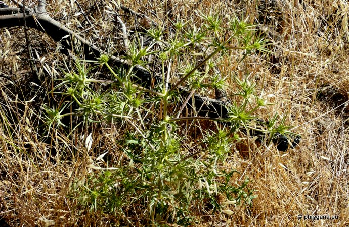
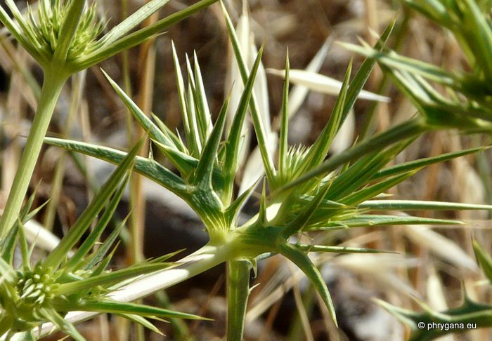
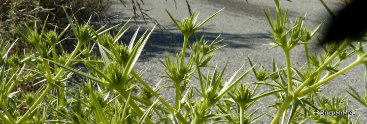
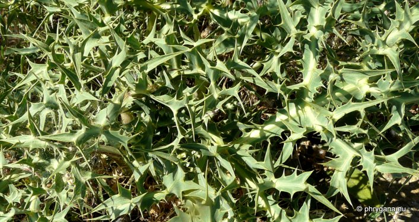

")
")
")
 punctum Ochsenheimer 1808")
| PHRYGANA | Fauna | Flora | Galles | liste des espèces |
contact -
info - commentaires phrygana1 (at) gmail.com |
| Particularités crétoises | nouveautés | Mines | ressources naturelles |
| Eryngium campestre L. |
| 394 | Flora | APIACEAE | Eryngium L. |
|  Eryngium campestre Apodoulou 27 mai 2012 |
| le Chardon roulant -- Echte kruisdistel -- Feld-Mannstreu -- Field Eryngo | |
| Plante glabre d'aspect vert blanchâtre, à souche épaisse | |
| Feuilles: feuilles coriaces épineuses obovales; feuilles basilaires (longues de 10 - 25 cm), pétiolées ovales, à trois lobes, à pétioles non ailés | |
| Tige dressé, robuste, ramifiée | |
| Fleurs: inflorescence à 10- 20 capitules globuleux (1 à 2 cm de diamètre) munis de bractées épineuses étroites, longues de 15 à 45 mm; fleurs sessiles, vert très pâle-blanchâtre; paillettes du réceptacle entières | |
| Fruits: obovales, | |
| Hauteur: 20 - 70 cm | Type biologique: hémicryptophyte ramifié |
| Floraison: mai juin juillet août septembre | |
| Altitudes: 0 - 1550 m | |
| Statut en Crète: indigène -- native | |
| Biotopes en Crète: phrygana, dunes, terrains vagues, friches | |
| Distribution: Europe, Asie occidentale, Afrique du Nord | |
| Espèce héliophile, mellifère, médicinale | |
| Usage culinaire en Crète: les jeunes pousses sont consommées crues en salade ou cuites à la vapeur ou braisées | |
| Plante-hôte pour: | ||
|
|
|
|
| Udea institalis | Graphosoma semipunctatum | Tholagmus flavolineatus |
|
|
||
| Zygaena punctum | ||
|
 Eryngium campestre Apodoulou 27 mai 2012 |
|
 Eryngium campestre Apodoulou 27 mai 2012 |
|
 Eryngium campestre Apodoulou 27 mai 2012 |
| 01 juin 2013 |
| © paul fontaine -- © Phrygana.eu 2007 -- 2013 |